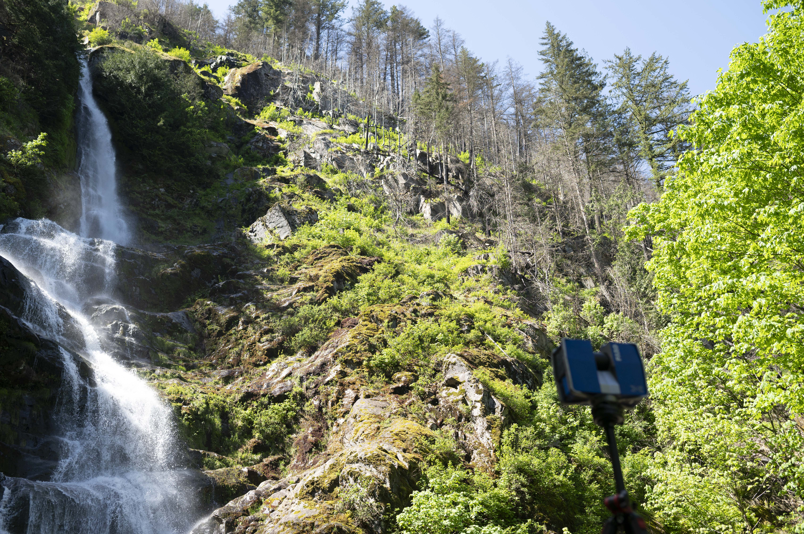
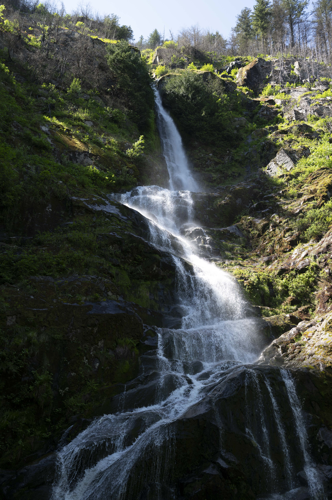
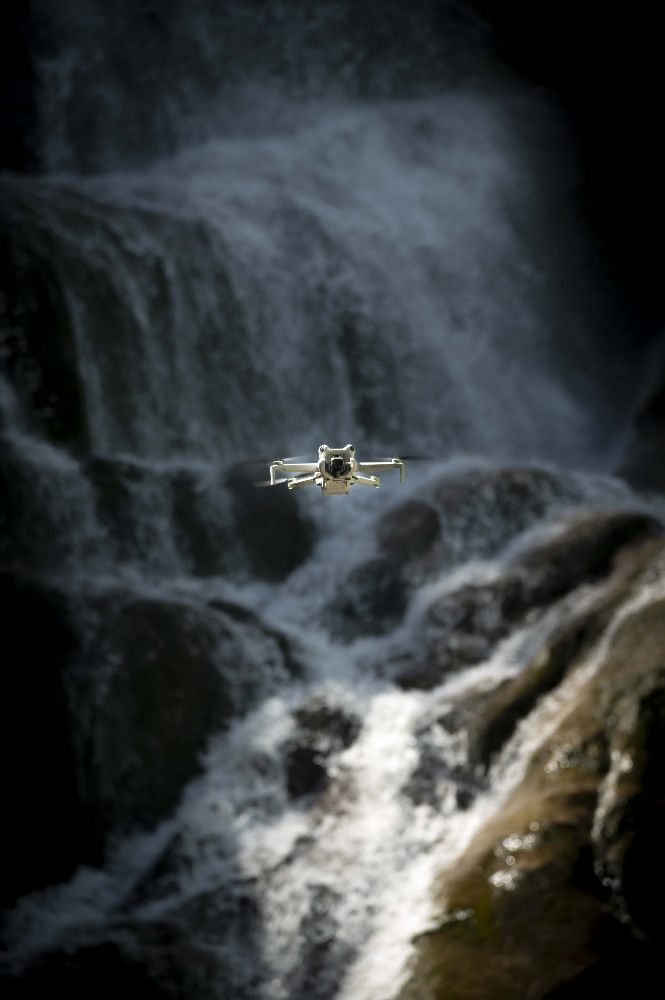
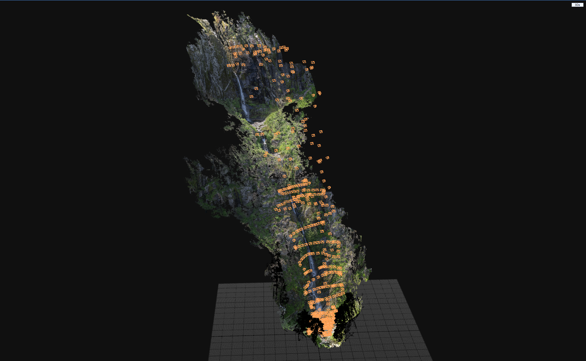
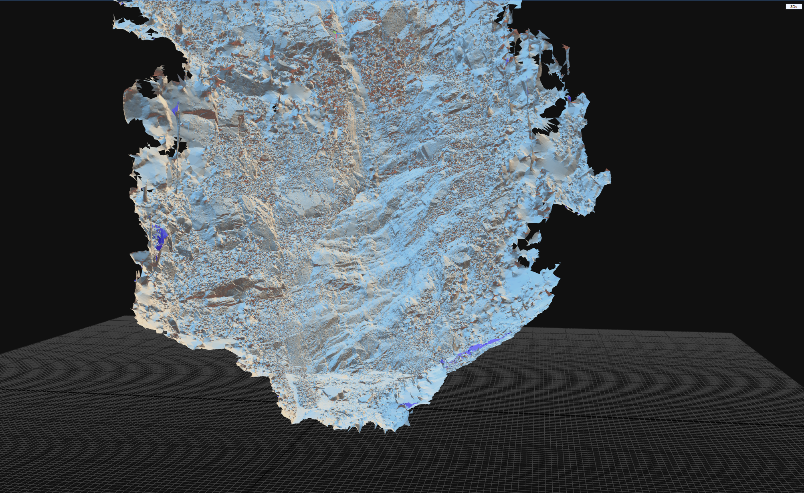

A 360-meter waterfall near Highway 1 in Hope, British Columbia, captured in under three hours using a three-part hybrid pipeline to prove that no environment is too extreme for production-ready digital capture.
Flood Falls presented a combination of constraints rarely found in a single location: all equipment had to be carried in on foot along a hiking trail, the site was publicly accessible requiring minimal disruption, and the waterfall itself, over 360 meters tall, far exceeded what any ground-based LiDAR scanner could cover alone. Solving it required deploying three capture methods simultaneously against a tight daylight window.
Terrestrial LiDAR gathered dense, geometrically accurate point cloud data across the base terrain and rock formations — 22 individual scan positions in total. A drone flew vertical passes in overlapping grids to photograph the entire cliff face from elevations unreachable on foot, with handheld photogrammetry bridging the gap between datasets. A third pass with a DSLR captured high-resolution texture reference for look development and VFX workflows. All three were registered and merged in RealityCapture into a single unified asset.
The resulting deliverable — built from 1,076 photographs and 22 laser scans — is production-ready for VFX tracking, real-time game engines, and digital doubles. A camera matchmove performed on top of the combined scan data validated the asset's viability as an on-set location reference, where a single capture method never covers the full environment.
A 360-meter vertical subject that ground-based LiDAR physically cannot see, requiring aerial, terrestrial, and handheld capture to be fused into one coherent asset while working on foot, in public, against a single daylight window.




